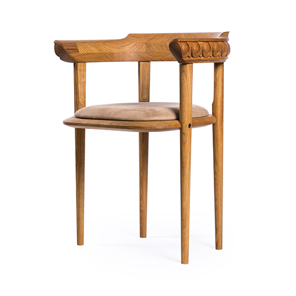
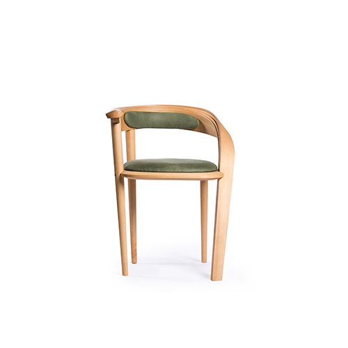

The Wall
Material: Oak;
Tables and stands; study area
Story
This standing desk is inspired by the aqueducts of Ancient Rome, which were essential to the supply of water to Roman cities and towns. With smooth surfaces set on gentle curves and an inward slanting base, this eye-catching masterpiece is designed to be a talking point, while also delivering a remarkable user experience in a contemporary working environment.


Design
The Wall is a solid yet functional piece of furniture, that keeps in mind comfort and functionality. We designed it to ensure that functionality is not compromised in any way, with design elements like multiple levels, an inward sloping base and a foot rail.
Similar Products

Corinthian
Corinthian
learn more
arrow_right_alt

Doric
learn more
arrow_right_alt

Ergos
learn more
arrow_right_alt

Ionic